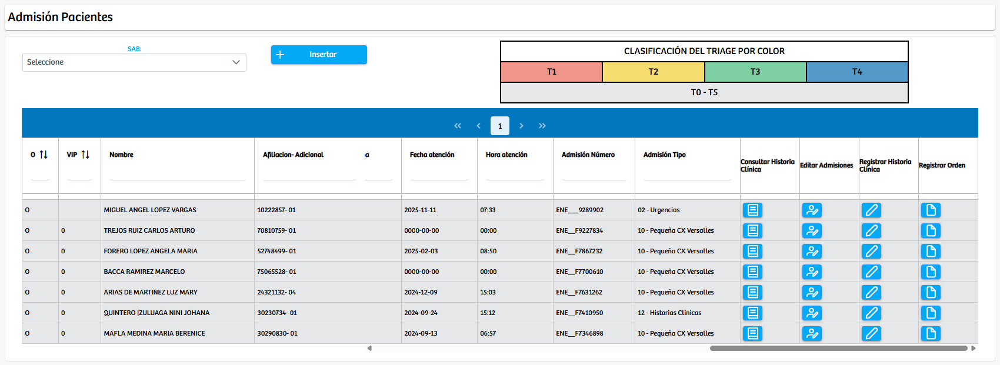
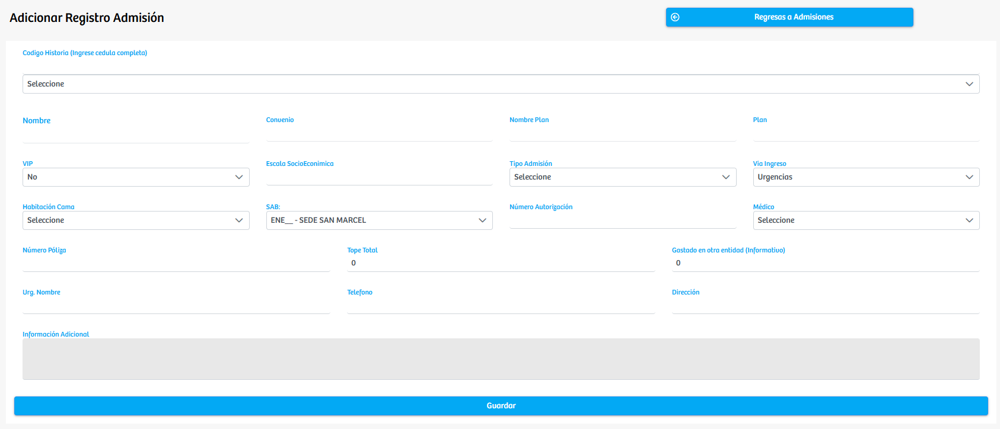
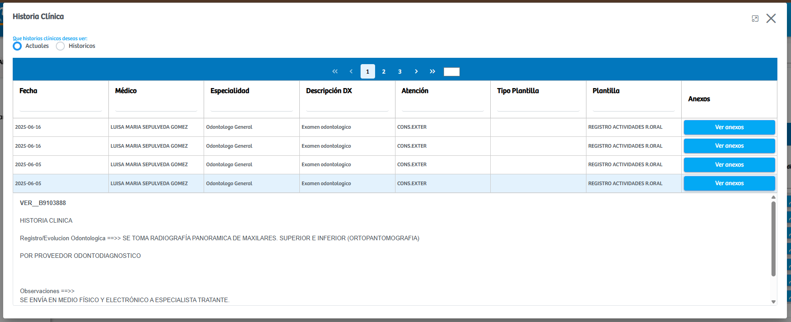
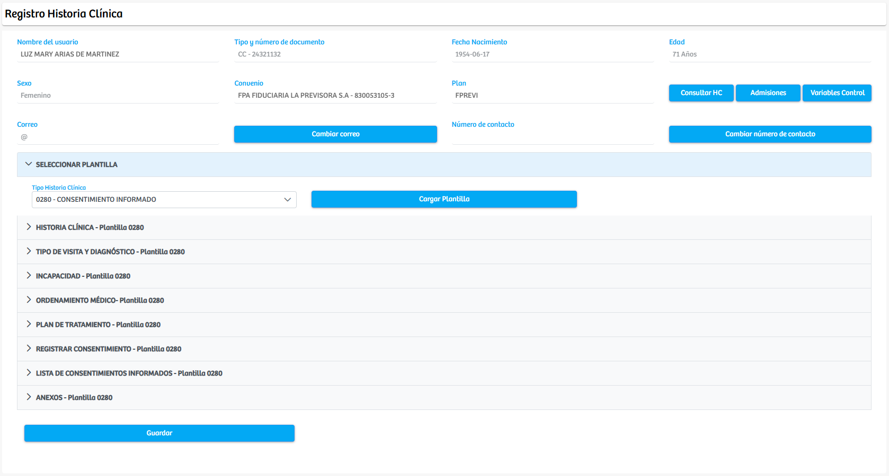
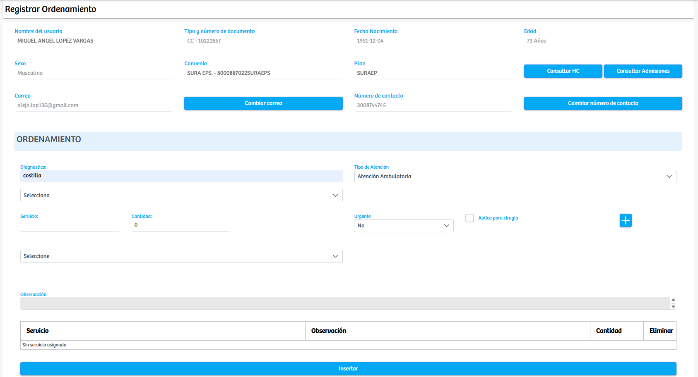

Modulos Sas-Web
Funcionalidades
Medicamentos
Este es un modulo en el cual podemos consultar a cada paciente(registro) de manera individual para poder ver sus ordenes
Al presionar el boton "Insertar" automaticamente estaremos en el siguiente formulario donde se nos van a pedir datos necesarios para generar la nueva admision del paciente que esta ingresando. Entre estos ultimos se encuentran la cedula, nombre, convenio, plan y demas.
Volviendo a la interfaz principal, recordamos que cada registro tiene 4 botones los cuales nos brindan diferentes funcionalidades, primero vamos a tratar "Consultar Historia Clinica". Este boton nos abre un modal donde podemos ver las historias clinicas del paciente seleccionado, cada historia tiene sus anexos y documentacion donde se especifica los procedimientos realizados y los resultados obtenidos.
Ahora mencionando la funcionalidad del boton "Editar Admisiones", como su nombre lo indica este boton el que nos permite modificar los registros de admisiones ya creados en caso de que haya algun error o se requiera editar el registro. Aparte a esto encontramos tambien el boton de "Registrar Historia Clinica" el cual nos manda a otra vista donde apareceran los datos del paciente, junto a algunas funciones como ver las HC, admisiones y variables de control. Debajo de esto encontraremos un select el cual nos dejara cargar una plantilla de historia clinica, esto con el fin de registrarle una nueva historia al paciente seleccionado.
Volviendo a la tabla principal de admisiones, recordamos tener un ultimo boton: "Registrar Orden" el cual nos lleva a una nueva vista en la cual sale la informacion personal del paciente y justo debajo de esta sale un apartado para definir el diagnostico del paciente y los medicamentos que van a necesitar administrar a este: Se debe especificar cual, la cantidad, y si es urgente.
